← Índice de los 69 tutes de IDA
Tute 56 · HackSys vulnerable driver
se conecta con: Fuera de alcance
56-INTRODUCCION AL REVERSING CON IDA PRO - KERNEL EXPLOITATION.
HACKSYS VULNERABLE DRIVER.
Vamos a ver ahora un driver que esta programado con diferentes vulnerabilidades para entender como explotarlas, como siempre por ahora usaremos un Windows 7 sp1 sin ningún parche de seguridad, sabemos que allí funcionara todo, luego iremos viendo que cambios hay más adelante y que otras posibilidades existen en los nuevos sistemas, pero vamos paso a paso.
Tenemos un driver compilado con los símbolos por ahora que tiene la posibilidad de explotarlo de casi todas las formas posibles, está hecho para practicar.
https://github.com/hacksysteam/HackSysExtremeVulnerableDriver
Vulnerabilities Implemented
Double Fetch
Pool Overflow
Use After Free
Type Confusion
Stack Overflow
Integer Overflow
Stack Overflow GS
Arbitrary Overwrite
Null Pointer Dereference
Uninitialized Heap Variable
Uninitialized Stack Variable
Insecure Kernel Resource Access
Empezaremos poco a poco primero con el análisis del stack overflow.
Por supuesto hay que copiar el driver a la maquina target y cargarlo con el OSR DRIVER LOADER.
Lo copiamos con su idb a una carpeta local y lo abrimos en IDA para ir analizando.
Bueno como ya sabemos acá tenemos símbolos, eso nos facilita mucho las cosas, pero igual lo primero que debemos buscar y que casi siempre es reconocido con o sin símbolos es la estructura _DRIVER_OBJECT que se pasa como argumento al DriverEntry.
En este caso no hay demasiado problema
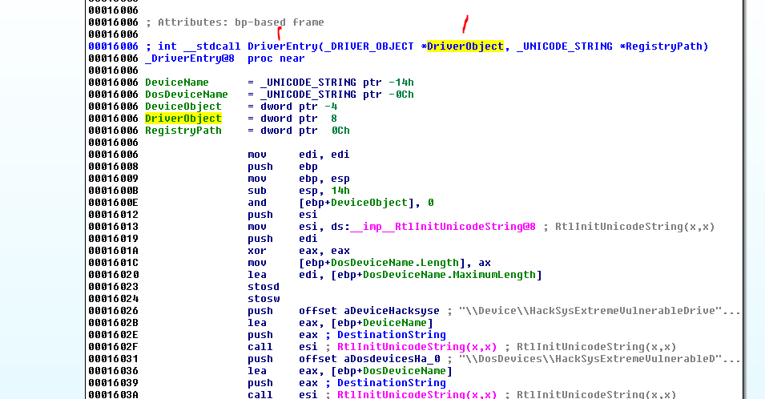
Acá está bien a la vista el punto de entrada y sus argumentos están bien detectados.
Vemos que usa como en los ejemplos anteriores la api RtlInitUnicodeString para inicializar las estructuras
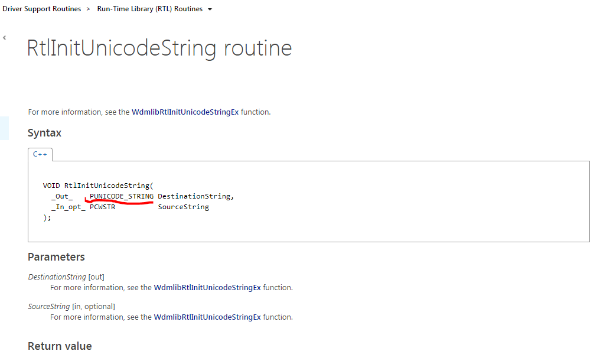
Recordemos que el primer argumento era un puntero a la estructura UNICODE_STRING, alli vemos PUNICODE_STRING o sea puntero a estructura UNICODE_STRING.
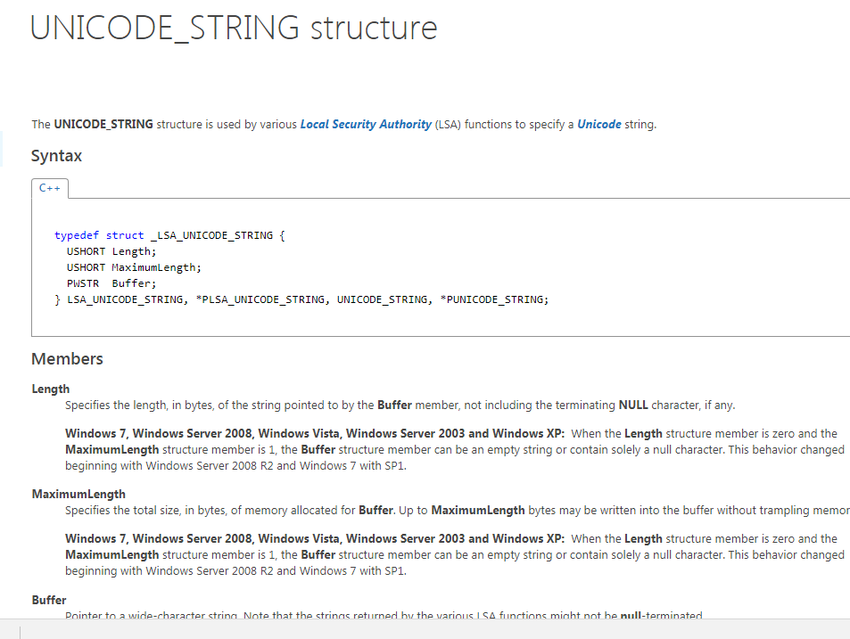
O sea, es un buffer donde guardara el largo en un word, el máximo largo en otro campo del tipo word y copiara el puntero a la string unicode que le pasamos como source a continuación en el tercer campo.
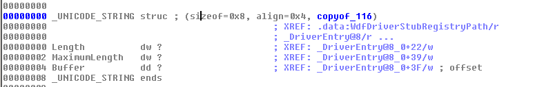
Primero inicializa a cero la variable DosDeviceName que también es del tipo UNICODE_STRING.
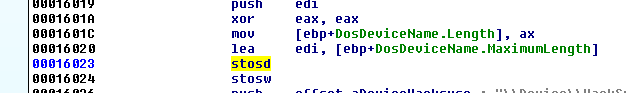
Pone a cero el campo Length moviendo AX que vale 0 alli, y luego STOSD copia el valor de EAX o sea pone a cero la direccion donde apunta EDI o sea en el campo MaximumLenght y luego otro STOSW copia AX o sea cero en los dos bytes siguientes o sea poniendo 6 bytes a cero inicializa los dos campos restantes de la estructura que ocupan 6 bytes (1 WORD y un DWORD)
El compilador solo inicializa la variable DosDeviceName la otra que se llama DeviceName no la pone a cero, la usa directamente.
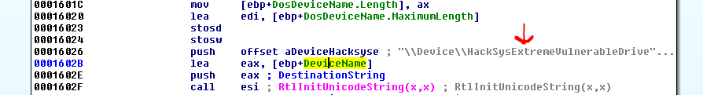
O sea que DeviceName es la string esa convertida a tipo estructura UNICODE_STRING, o sea que en los tres campos estará el largo, el máximo largo y el puntero que le pasamos a la string source se copiara al tercer campo.
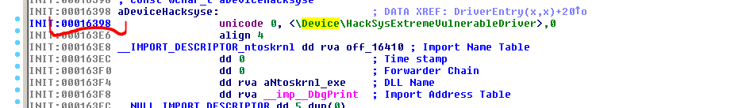
En mi maquina esta en 0x0016938, ese offset lo copiara al tercer campo de la estructura.
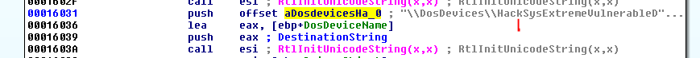
En DosDeviceName armara la otra UNICODE_STRING usando como source la esa otra string.
Despues viene la llamada a IoCreateDevice, recordemos que había que crear un Device Object para poder comunicarse desde los programas en modo user.
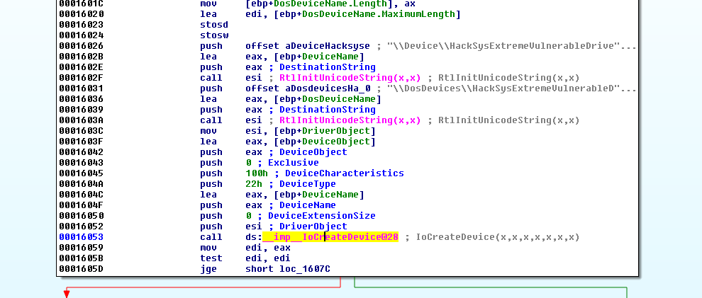
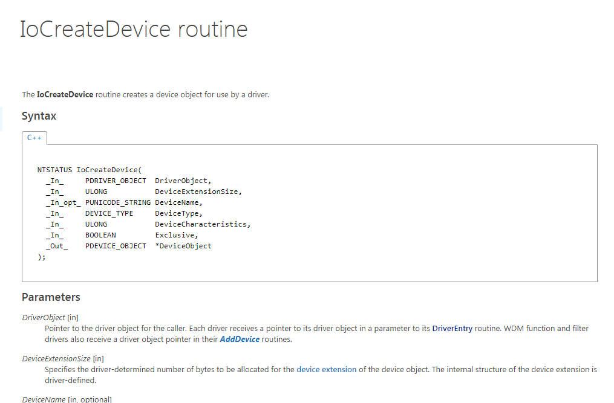
Esto estará casi siempre cerca del punto de entrada en la mayoría de los drivers que interactúan con programas en modo user.
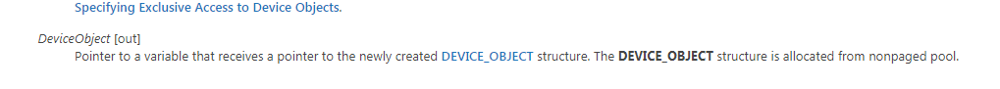
El último argumento es el puntero a la nueva estructura creada DEVICE_OBJECT.
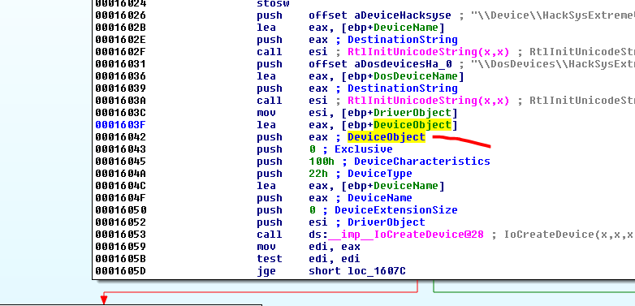
Vemos que si el resultado de crear el Device es negativo lo cual se chequea en ese salto condicional signed, va a los bloques naranjas de error y se borra el Device Object con IoDeleteDevice.
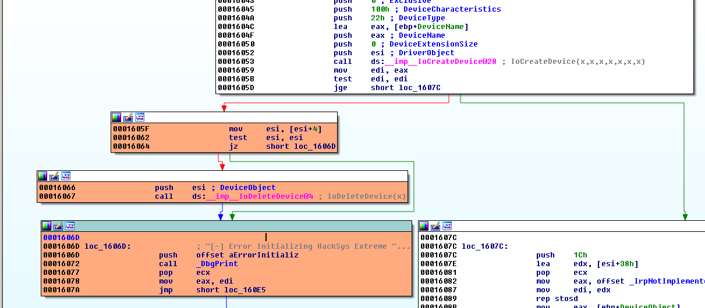
Luego va a inicializar a partir de ESI + 38 como ESI apunta a DriverObject apretando T, puedo ver que campo es (sino esta DRIVER_OBJECT ir a LOCAL TYPES y sincronizarlo)
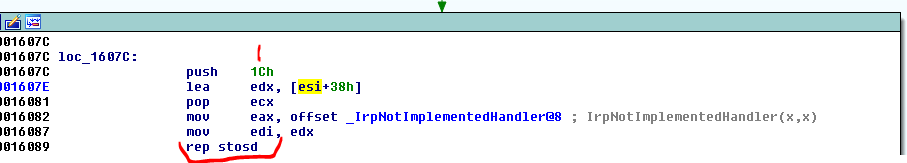

O sea es el puntero a la estructura MajorFunction que recordamos es una tablita de punteros que según la posición, me llevaran a diferentes funciones según el caso, recordemos que por ejemplo.
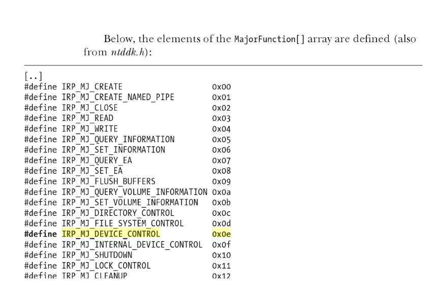
El primer puntero o sea el que esta en la posición 0 es IRP_MJ_CREATE y sera donde saltara cuando utilice CreateFile para abrir el handle del Device, el segundo puntero o sea el valor 0x1 estará en la posición 4 ya que son DWORDs y asi sucesivamente, quiere decir que inversamente si yo tengo un campo de esta estructura por su offset para saber que puntero es deberé dividir por cuatro, en el ejemplo que usábamos en los drivers anteriores recordamos que
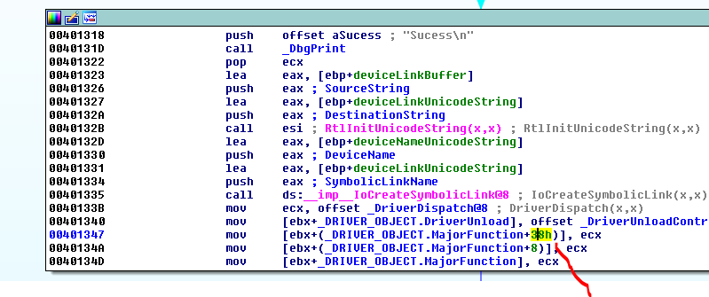
Eso corresponde a 0x38/4 o sea
Python>hex(0x38/4)
0xe
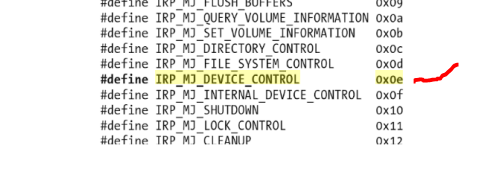
Que este 0xe era IRP_MJ_DEVICE_CONTROL cuando le pasábamos un IOCTL desde user, ese puntero lo pisábamos con un Dispatch para que según que IOCTL sea, se ejecute diferentes acciones mediante un switch por ejemplo.
En el caso actual vemos que inicializa a partir de un puntero al inicio de la tablita MajorFunction, copia el valor de EAX al cual le mueve un offset de una función que se llama _Irp_NotImplementedHandlers, y eso lo copia 0x1c veces que pasa a ECX, que es la cantidad de punteros a inicializar.
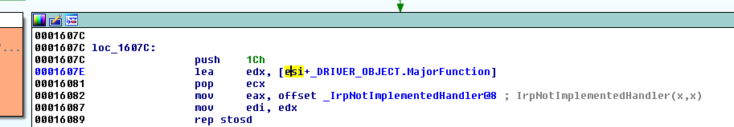
O sea que al principio toda la tablita la inicializa con este puntero que aparentemente no haría nada ya veremos, aparenta ser como un caso por default.
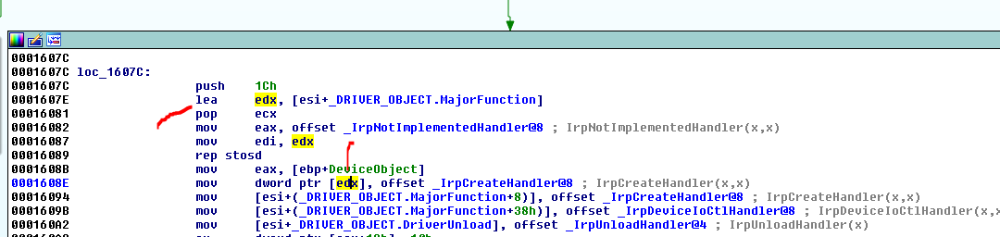
Como EDX tenia el puntero al inicio de MajorFunction su contenido es la posición 0 o sea
+#define IRP_MJ_CREATE 0x00
+#define IRP_MJ_CREATE_NAMED_PIPE 0x01
+#define IRP_MJ_CLOSE 0x02
+#define IRP_MJ_READ 0x03
+#define IRP_MJ_WRITE 0x04
+#define IRP_MJ_QUERY_INFORMATION 0x05
+#define IRP_MJ_SET_INFORMATION 0x06
+#define IRP_MJ_QUERY_EA 0x07
+#define IRP_MJ_SET_EA 0x08
+#define IRP_MJ_FLUSH_BUFFERS 0x09
+#define IRP_MJ_QUERY_VOLUME_INFORMATION 0x0a
+#define IRP_MJ_SET_VOLUME_INFORMATION 0x0b
+#define IRP_MJ_DIRECTORY_CONTROL 0x0c
+#define IRP_MJ_FILE_SYSTEM_CONTROL 0x0d
+#define IRP_MJ_DEVICE_CONTROL 0x0e
+#define IRP_MJ_INTERNAL_DEVICE_CONTROL 0x0f
+#define IRP_MJ_SCSI 0x0f
+#define IRP_MJ_SHUTDOWN 0x10
+#define IRP_MJ_LOCK_CONTROL 0x11
+#define IRP_MJ_CLEANUP 0x12
+#define IRP_MJ_CREATE_MAILSLOT 0x13
+#define IRP_MJ_QUERY_SECURITY 0x14
+#define IRP_MJ_SET_SECURITY 0x15
+#define IRP_MJ_POWER 0x16
+#define IRP_MJ_SYSTEM_CONTROL 0x17
+#define IRP_MJ_DEVICE_CHANGE 0x18
+#define IRP_MJ_QUERY_QUOTA 0x19
+#define IRP_MJ_SET_QUOTA 0x1a
+#define IRP_MJ_PNP 0x1b
+#define IRP_MJ_PNP_POWER 0x1b
+#define IRP_MJ_MAXIMUM_FUNCTION 0x1b
Crearemos una estructura MajorFunction
struct __MajorFunction{
unsigned int _MJ_CREATE;
unsigned int _MJ_CREATE_NAMED_PIPE;
unsigned int _MJ_CLOSE;
unsigned int _MJ_READ;
unsigned int _MJ_WRITE;
unsigned int _MJ_QUERY_INFORMATION;
unsigned int _MJ_SET_INFORMATION;
unsigned int _MJ_QUERY_EA;
unsigned int _MJ_SET_EA;
unsigned int _MJ_FLUSH_BUFFERS;
unsigned int _MJ_QUERY_VOLUME_INFORMATION;
unsigned int _MJ_SET_VOLUME_INFORMATION;
unsigned int _MJ_DIRECTORY_CONTROL;
unsigned int _MJ_FILE_SYSTEM_CONTROL;
unsigned int _MJ_DEVICE_CONTROL;
unsigned int _MJ_INTERNAL_DEVICE_CONTROL;
unsigned int _MJ_SCSI;
unsigned int _MJ_SHUTDOWN;
unsigned int _MJ_LOCK_CONTROL;
unsigned int _MJ_CLEANUP;
unsigned int _MJ_CREATE_MAILSLOT;
unsigned int _MJ_QUERY_SECURITY;
unsigned int _MJ_SET_SECURITY;
unsigned int _MJ_POWER;
unsigned int _MJ_SYSTEM_CONTROL;
unsigned int _MJ_DEVICE_CHANGE;
unsigned int _MJ_QUERY_QUOTA;
unsigned int _MJ_SET_QUOTA;
unsigned int _MJ_PNP;
unsigned int _MJ_PNP_POWER;
unsigned int _MJ_MAXIMUM_FUNCTION;
};
Se que son punteros pero para nuestro uso unsigned int funcionara, el tema es que el local types, usando INSERT no me la toma, asi que ahí mismo exporte , le agregue la estructura y la volví a cargar con FILE-LOAD FILE-PARSE C HEADER FILE y asi la tomo.
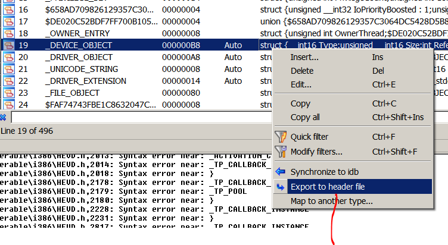
La agregue en el .h
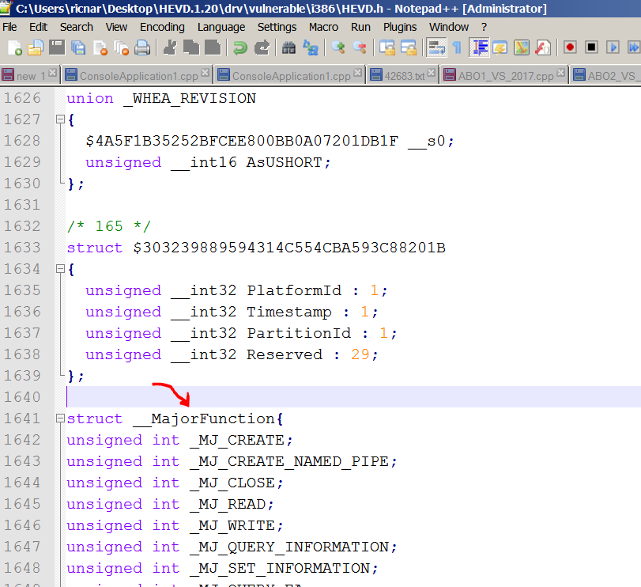
La cuestión que ahora si aparece
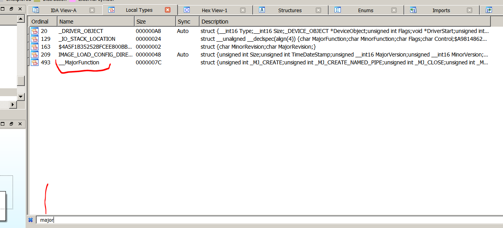
Me dejara editar dentro de la estructura DRIVER_OBJECT, el tipo de MajorFunction en LocalTipes?
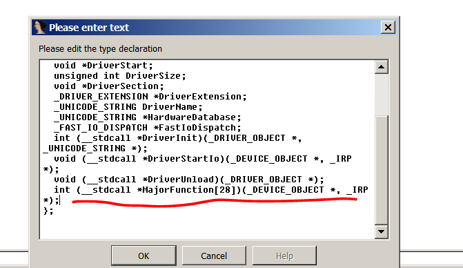
Vemos que le cambie la definición del campo MajorFunction, dentro de la estructura DRIVER_OBJECT para que sea del tipo __MajorFunction que definí.
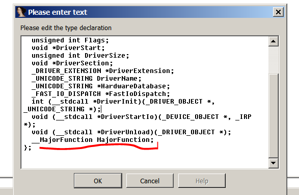
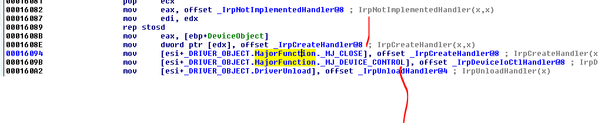
Vemos que ahora si quedan definidos los campos con sus nombres de cada puntero.
Cuando hacemos T no se puede elegir la estructura Driver_Object porque EDX apunta a MajorFunction asi que elijo esta ultima.
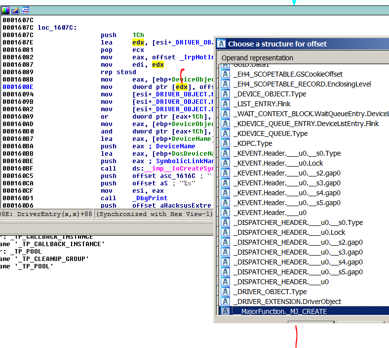
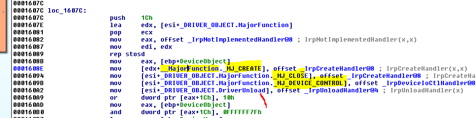
Ahora quedo mas lindo, esta bien determinado las funciones que usaran_MJ_CREATE, _MJ_CLOSE, _MJ_DEVICE_CONTROL y la que se llamara al detener el driver DriverUnload.
Obviamente cuando desde user hagamos CreateFile llamara a la función que pisa el campo _MJ_CREATE cuando pasemos un IOCTL a DeviceIoControl, llamara a _MJ_DEVICE_CONTROL, cuando se llame a CloseHandle, llamara a la que pisa _MJ_CLOSE y cuando se detenga la que pisa DriverUnload.
Miremos un poco la función que se llamara cuando se le pasen los IOCTL.
Sincronizamos la estructura IRP desde LOCAL TYPES
Como vimos en la parte 53 el campo 60 de IRP apunta a una estructura _IO_STACK_LOCATION que si figura en IDA aquí pasa lo mismo.
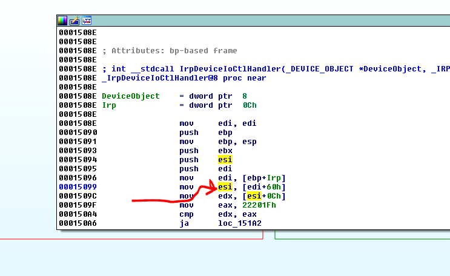
ESI aquí apunta a _IO_STACK_LOCATION, asi que todo lo que sea ESI+xxx sera un campo de dicha estructura, despues de sincronizarla desde LOCAL TYPES.
Recordemos que _IO_STACK_LOCATION tiene varias opciones elegiré la correspondiente a IoControlCode.
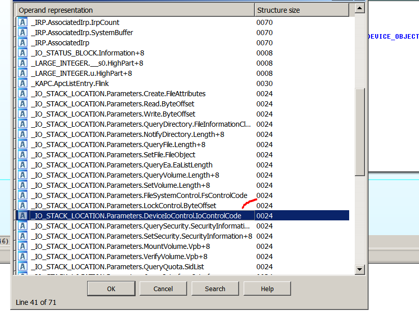
Vemos que según el IOCTL el switch nos envía a diferentes bloques, y que los mismos están marcados con el tipo de vulnerabilidad que tiene cada camino.
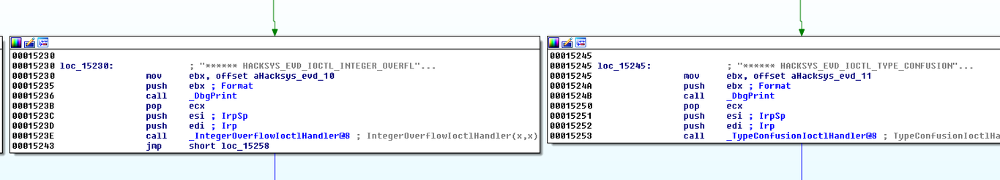
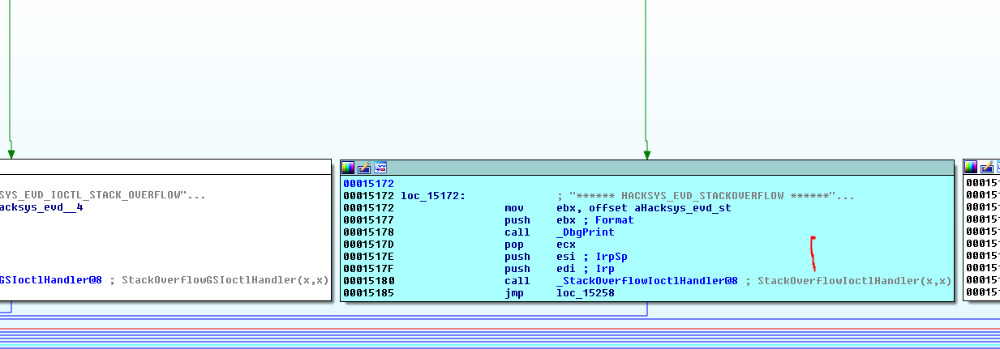
Alli hay una que dice STACKOVERFLOW, asi que no hay que matarse mucho jeje.
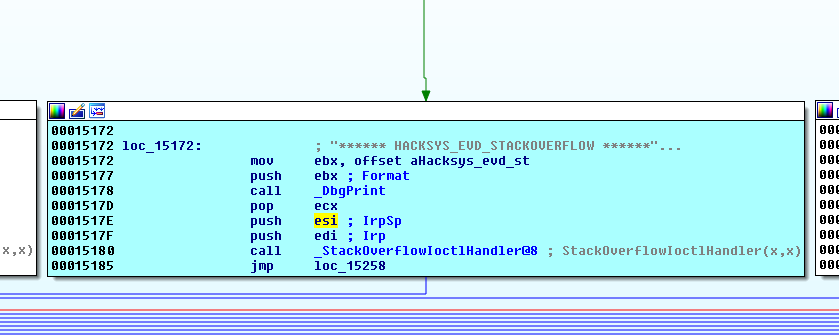
Vemos que los dos argumentos que le pasa en EDI la estructura IRP y en ESI ahí dice IRPSP que es el nombre de la variable del tipo _IO_STACK_LOCATION que estaba en ESI.
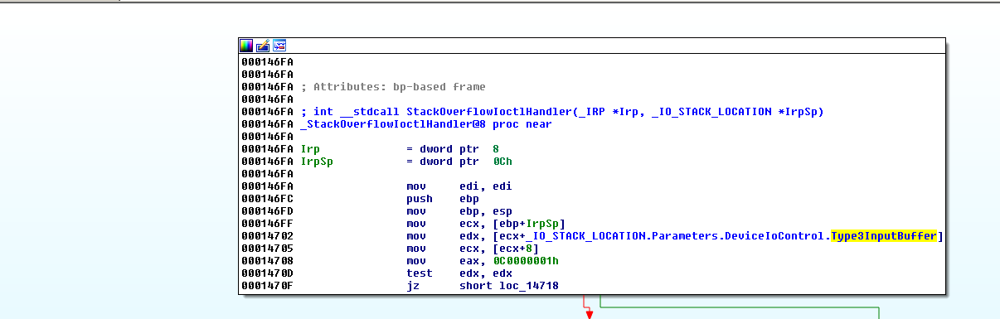
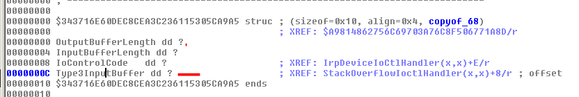
Es un puntero a un buffer de entrada, también en la misma subestructura esta el IoControlCode y el largo del Buffer de entrada y de salida, supuestamente estos valores se los pasare yo, veamos que hace con ellos.
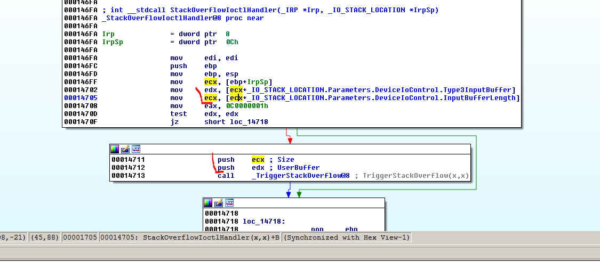
Vemos que ese size y ese buffer los pasa a la función _TriggerStackOverflow.
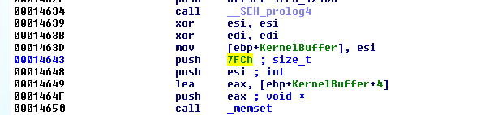
Vemos que pone a cero con ESI el primer DWORD del buffer KernelBuffer y luego con memset pone a cero desde el siguiente DWORD ya que le suma 4 a KernelBuffer, el size 0x7fc.
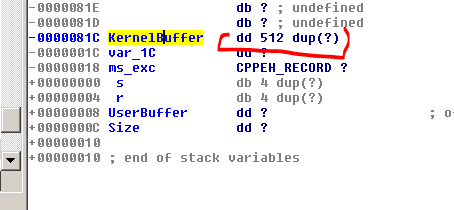
Dicho buffer tiene de largo 512 decimal por 4 ya que es un array de DWORD (dd) asi que el largo total en decimal es
512 * 4
Out[64]: 2048
En HEXA es
hex(2048)
Out[65]: '0x800'
Por eso al poner el primer DWORD a cero y luego los 0x7fc restantes, realmente pone todo el buffer de 0x800 a cero. (0x7fc+4=0x800)
Luego llama a ProbeForRead que chequea si el buffer de entrada en user esta alineado y esta en el espacio de user.
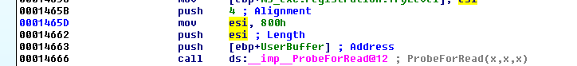
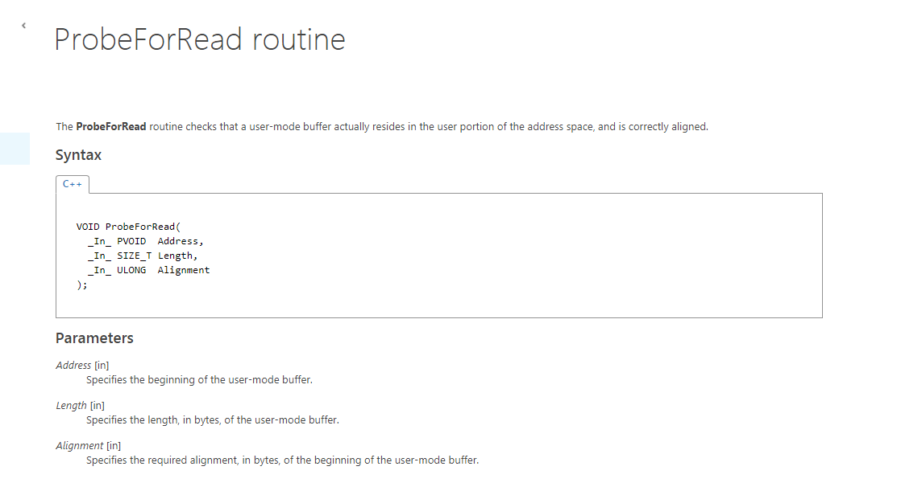
Luego imprime los punteros de los buffers y sus sizes.
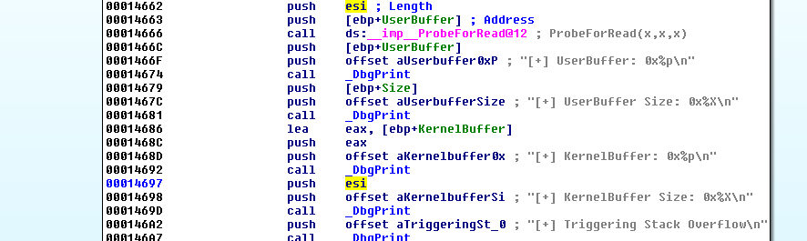
Aquí vemos claramente el stack overflow, ya que usa el size que yo le paso como dato para copiar desde el buffer de entrada en user, al buffer en kernel que es el destination.
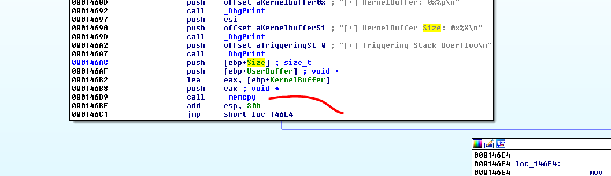
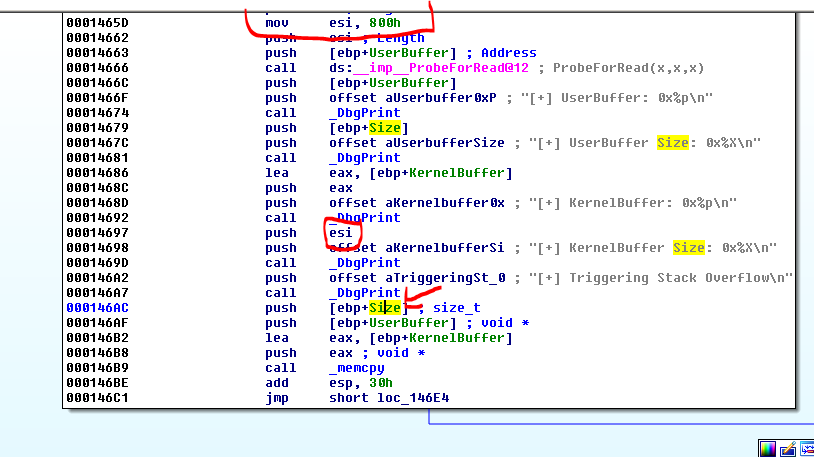
Ahí vemos que al imprimir el size del buffer de kernel, usa el que esta en ESI que es la constante 0x800, pero al hacer el memcpy, usa el argumento size que le paso yo, sin ningún tipo de chequeo lo cual producirá un stack overflow y como aquí no se ve cookie ni nada se podrá desbordar fácilmente.
En ala parte siguiente haremos el script con la explotación aqui terminamos el análisis.
Hasta la parte siguiente
Ricardo Narvaja